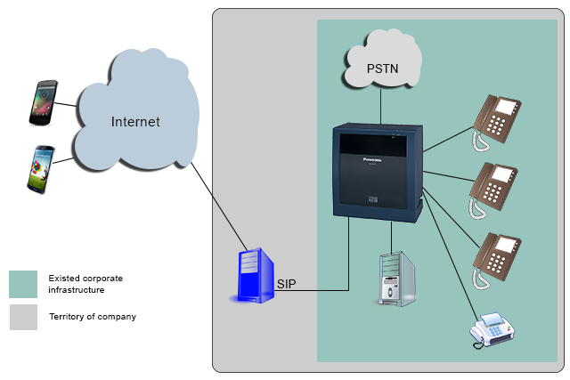

Приватность по умолчанию
Cryptia Secure Messenger

Cryptia позволяет абонентам осуществлять голосовые звонки, обмениваться файлами и сообщениями, используя криптографически стойкие алгоритмы шифрования.
View all versions
User manual
Общайтесь безопасно
cryptia for Android
cryptia for iOS
“Спокойно общайтесь на любые темы с другими абонентами Cryptia, не опасаясь впоследствии услышать запись разговора на YouTube. Между абонентами устанавливается защищенное прямое соединение, минимизирующее риск перехвата и обеспечивающее исключительно низкую задержку речи. По прямому соединению также доставляются мгновенные сообщения, которыми можно обмениваться в режиме чата. История вашей переписки хранится только на вашем компьютере в зашифрованном виде..


Легко работайте с несколькими учетными записями

Иногда возникает желание иметь несколько учетных записей — например, одну для друзей, другую для работы... Нет ничего проще! Заведите любое количество аккаунтов и организуйте свою работу так, как вам удобно. Можно даже работать с разных логинов одновременно — простой интерфейс позволяет переключаться между ними одним щелчком мыши.
Каждая учетная запись располагает собственной визитной карточкой, которую вы можете заполнить личными данными по своему усмотрению. Кроме того, поддерживается загрузка изображений — один ваш аккаунт может может украшать, к примеру, ваша фотография, другой — логотип вашей компании. Вам решать, насколько просто (или сложно) другие пользователи будут находить и узнавать вашу учетную запись.
Не беспокойтесь о конфиденциальных файлах
Забудьте о неудобной процедуре обмена ключами — благодаря защищенному прямому соединению важный файл теперь передать так же просто, как написать «Привет!». И даже когда файл получен, вы можете быть уверены в его сохранности. Ведь для каждой учетной записи создается зашифрованный контейнер приема файлов, который монтируется при подключении и демонтируется при отключении или выходе из программы. Даже если злоумышленник получит доступ к вашему устройству или скопирует файл контейнера — он все равно не сможет ничего расшифровать.

Подключите Cryptia к существующей корпоративной инфраструктуре
Вам неловко получать от клиентов конфиденциальные данные по телефону? Желаете без посторонних обсудить юридические нюансы? Позаботьтесь о комфорте своих клиентов и партнеров — предоставьте им возможность общаться с вами по защищенному каналу связи. А если у вашей компании уже есть готовая инфраструктура и бизнес-процессы работают как часы — не беда. Подключите Cryptia к уже имеющейся системе, и ваша отлаженная система не пострадает. Никаких дополнительных затрат на перестройку инфраструктуры или переобучение сотрудников!

АЛЬТЕРНАТИВА PGP
Клиентская часть системы является хорошей альтернативой известной программе шифрования PGP (gnupg), устраняя имеющиеся в ней концептуальные проблемы.
PGP для шифрования сообщений использует следующую схему:
Генерируется случайный сеансовый ключ.
Сообщение зашифровывается симметричным алгоритмом, используя ключ, полученный на шаге 1.
Сам ключ зашифровывается ассиметричным алгоритмом (EL Gamal-Encryption или RSA) и в зашифрованном виде включается в сообщение.
Такая схема имеет существенный недостаток. Предположим, что злоумышленник имеет возможность, регистрировать все ваши сеансы. Разумеется, он не может их расшифровать. Однако если когда-нибудь он получит доступ к секретному ключу, то сможет расшифровать все имеющиеся в его распоряжении, ранее записанные сообщения. В случае согласования ключей по Диффи-Хеллману компрометация секретного ключа не ведет к расшифровке ранее записанных сообщений, так как сеансовые секретные ключи алгоритма Диффи-Хелман существуют только в ОЗУ короткое время и никуда не передаются и нигде не сохраняются. Если старые сеансы связи представляют собой какую-либо ценность, то в случае использования схемы с шифрованием случайного ключа (PGP) пользователь рискует тем, что злоумышленниками будет предпринята попытка «добыть» его секретный ключ. А насколько неприятными будут действия, обозначенные словом «добыть»? В случае же использования схемы согласования ключа по Диффи-Хелману, можно, по требованию, отдавать секретный ключ для подписи, не опасаясь при этом расшифровки старых сеансов связи.

Подробно о шифровании в сервисе Cryptia >
-
Лучшее место для поиска ответов на часто задаваемые вопросы. Найти ответы >
-
- Что такое Cryptia?
- Cryptia - это сервис, позволяющий абонентам системы осуществлять голосовые звонки (в перспективе видео-звонки), обмениваться файлами и сообщениями, используя криптографически стойкие алгоритмы шифрования. Клиентская часть распространяется с исходными текстами, что дает возможность экспертам убедиться в качестве шифрования соединений, а также в отсутствии скрытых возможностей, черных ходов и.т.п. Существуют версии клиентской части программы для всех распространенных настольных операционных систем, а также для некоторых смартфонов (список будет увеличиваться).
- Насколько надежно зашифрована передаваемая информация?
- Весь трафик между клиентами зашифровывается отправителем и расшифровывается получателем, используя одноразовые сеансовые ключи. Шифрование сквозное – от отправителя до получателя без перекодировок посредине. Протокол связи гарантирует невозможность атаки вида «человек посредине». Подробнее смотрите «шифрование соединений.»
- В чем состоит ваш бизнес если звонки и программа бесплатные?
- В дальнейшем планируется внедрение дополнительных платных сервисов, однако звонки и программа останутся бесплатными. Кроме того, мы продаем корпоративные сервера.
- Какие дополнительные возможности я получу если куплю бизнес аккаунт?
-
Обычный аккаунт имеет ряд ограничений:
1. Количество абонентов с которыми можно соединиться в течении дня ограничено пятью. Это означает что в течении дня пользователь с таким аккаунтом может неограниченное количество раз общаться с 5 абонентами (не считая абонентов с бизнес-аккаунтом). Пообщаться с шестым получится только на следующий день.
2. Для того чтобы обычные пользователи могли установить прямое соединение (общаться) требуется чтобы оба пользователя внесли друг друга в свой список контактов (подружились).
3. Размер списка контактов для обычных пользователей ограничен. Не более 100 контактов.
Бизнес-аккаунты свободны от этих ограничений. С бизнес-пользователем могут устанавливать соединения (звонить, передавать сообщения и файлы) пользователи, которых он не вносил в свой список контактов, что дает возможность публиковать свой логин, например на визитках или на сайте. В ближайшее время мы планируем добавить функцию защищенной синхронизации данных между устройствами. Эта функция будет доступна только при наличии бизнес-аккаунта. - Какие функции осуществляет ваш сервер?
- Сервер помогает клиентам устанавливать прямое соединение. Если клиенты находятся за роутерами или файерволами, то для того чтобы они могли установить соединение между собой, требуется сервер-посредник, видимый обоим клиентам. Также наш сервер выполняет функции центра сертификации ключей, подписывая своим ключом, публичные ключи клиентов. Подробнее об этом смотрите в разделе «Шифрование»
- Какая информация о клиентах храниться на ваших серверах?
- В БД наших серверов хранятся Логины пользователей, а также подписанные нами публичные ключи пользователей, списки отозванных пользователями сертификатов. Разумеется, на сервере ведется журнал действий пользователей, однако, сервер не может знать, с какой целью клиенты устанавливали прямое соединение. Возможно, для того чтобы передать вот такой вот смайлик, а возможно для многочасового серьезного разговора или передачи файлов. Это все уже идет между клиентами, минуя сервер.
- Какую информацию передает клиентская программа серверу?
-
Клиентская программа при входе на сервер передает следующую информацию:
- Логин Пользователя.
- Цифровая Подпись Пользователя или Пароль.
- Если передается цифровая подпись, то передается также серийный номер сертификата публичного ключа, приватным ключом от которого сформирована подпись.
- Версия клиентской части программы, а также название и версия операционной системы пользователя.
- Язык интерфейса, установленный в клиентской программе.
- Список логинов других пользователей, о входе/выходе которых из сети пользователь желает получать уведомления от сервера (может быть запрещено через настройки).
- Разрешение/Запрет серверу выдавать другим пользователям мой публичный ключ (сертификат), при установке соединения.
- Тип NAT устройства за которым находится пользователь.
- Внутренний IP-адрес компьютера пользователя. (может быть запрещено через настройки, но в этом случае соединения с пользователями, находящимися за одним и тем же устройством NAT будут устанавливаться неоптимальным способом)
- Могу ли я завести несколько Логинов на вашем сервере, для связи с разными людьми?
- Да можете. Можете также использовать их одновременно.
- Может ли клиентская программа одновременно поддерживать связь с несколькими серверами, например, сервером Cryptia.com и нашим корпоративным сервером?
- Да может.
- В случае невозможности установки прямого соединения между абонентами, весь голосовой трафик будет пропускаться через ваш релей-сервер. Может ли информация быть перехвачена на нем?
- Перехвачена, конечно может быть, а вот расшифрована нет (как и в любом другой точке сети от отправителя до получателя, например, у вашего провайдера). Шифрование сквозное – от отправителя до получателя без перекодировок посредине. Протокол связи гарантирует невозможность атаки вида «человек посредине». Подробнее смотрите «шифрование соединений.».
- Почему в вашем сервисе нельзя отправлять короткие сообщения и файлы через сервер, как это делается в XMPP или Skype, а вместо этого требуется устанавливать прямое соединение?
- Это сделано с целью обеспечения Вашей и Нашей безопасности. В случае передачи сообщений и файлов через сервер, сервер должен их расшифровать ключом соединения отправителя и зашифровать ключом соединения получателя. В таком случае эта информация может быть перехвачена на сервере. Мы не желаем хранить у себя на серверах, НИКАКУЮ конфиденциальную информацию, которая может представлять ценность для третьих лиц, кроме той, которая необходима нам для обеспечения бесперебойной работы сервера. Смотрите ответ на вопрос «Какая информация о клиентах храниться на ваших серверах?».
- Почему Ваша программа требует отключить мой антивирус или файервол?
- Это не совсем так. Некоторые файерволы, в частности Kaspersky Internet Security, пытаются сканировать входящий трафик (а возможно и исходящий) на предмет наличия вирусов. В случае если соединение с сервером зашифровано по SSL, как в нашем случае, антивирус пытается «влезть» посредине. Для этого он, кстати, просит установить в операционную систему свой сертификат безопасности. Клиент Cryptia не может отличить «благородный» антивирус от «злоумышленника» когда и тот и другой пытаются перехватывать трафик, и поэтому, засекая такую попытку, мы ее пресекаем. Рекомендуем настроить в вашем антивирусе или файерволе исключение для клиента Cryptia. В частности для Kaspersky Internet Security нужно для программы Cryptia.exe указать опцию «не сканировать сетевой трафик». Отключать же антивирус и файервол совсем мы не рекомендуем.
- Почему не поддерживаются символы кириллицы в логинах?
-
Действительно в логинах поддерживаются только латинские буквы, цифры, символ подчеркивания "_" и точка. Это сделано по нескольким причинам.
- Эффективность работы сервера.
- Врядли вы сможете на глаз отличить, что логины "bank_of_muhosransk" и "bаnk_оf_muhosransk" - разные (во втором есть несколько букв на кириллице),
- Если разрешить кириллицу, то вероятно тогда надо разрешать любые юникод-символы, а мы не уверены, что сможем хотя бы прочитать логины на специфических языках, в которых мы не знаем даже как пишутся буквы..
- Можно ли настроить клиентскую программу Cryptia, на осуществление прямых клиентских соединений по UDP, используя конкретный UDP порт (порты)?
- Да, это возможно. Но поскольку этот случай довольно нетипичный, такой опции нет в окне настроек, а вам придется вручную редактировать конфигурационный файл Cryptia.ini (cryptia.conf для Linux). В нем же и комментарии как это сделать.
- Можно ли переносить клиентскую программу Cryptia c компьютера на компьютер не переустанавливая ее, а также хранить ее на съемном носителе, например на USB флешке?
- Для настольных платформ это возможно, но с некоторыми ограничениями. Для работы с криптоконтейнером требуется установка драйвера файловой системы, а для этого требуются полномочия Администратора (root). На всех платформах возможно работать в портативном режиме если отключить функцию криптоконтейнера. Под Windows возможно работать и с криптоконтейнерами если у вашей учетной записи есть полномочия Администратора. Под Linux для работы портативной версии с криптоконтейнерами требуется запускать ее при помощи sudo с вводом пароля root. Под MacOSX такая работа невозможна. В мобильных платформах это, как правило, невозможно. Android, iOS, Blackberry, Windows Phone, требуют, чтобы запускаемая программа была установлена в устройстве.
- Что означает надпись «контрольный код: ХХХХХ», которая показывается в окне прямого соединения?
-
Контрольный код – это последняя ступень вашей обороны.
Контрольный код это простой инструмент проверки пользователями отсутствия «человека - посредине». Для согласования сеансовых ключей шифрования используется алгоритм Диффи-Хеллмана. В результате работы алгоритма Диффи-Хеллмана обе стороны соединения получат согласованный ключ (один и тот же). Длина этого ключа будет равна длине параметров алгоритма Диффи-Хеллмана (минимум 1536 бита). Контрольный код рассчитывается так: согласованный ключ Диффи-Хеллмана разбивается на блоки по 16 бит и они все складываются между собой по модулю 2 (XOR- ятся) с циклическим сдвигом после каждой итерации. Разумеется, код должен получиться одинаковым на обеих сторонах. Этот код показывается в окне пользователю, и пользователи могут голосом удостовериться в идентичности. Контрольный код не передается через сеть и нигде не сохраняется. Если все же кому-то удастся вклиниться посредине в ваше соединение, то контрольные коды у вас и у вашего собеседника будут разные.
Это на самом деле избыточная защита, поскольку при установлении соединения пакеты с параметрами и публичными ключами алгоритма Диффи-Хеллман подписываются вашими приватными ключами и проверяются каждой стороной, используя публичный ключ другой стороны.
Кроме того, из окна прямого соединения можно просмотреть сертификаты публичного ключа другой стороны, а также ваши, которые участвовали в установлении соединения. Можно также голосом убедиться в идентичности используемых сертификатов, например, голосом сравнить серийные номера и отпечатки сертификатов. - Если кто-то подсмотрел контрольный код, сможет ли он расшифровать сеанс связи?
- Нет, не сможет. Точно также как, если кто-то «подсмотрит» последнюю цифру от суммы всех цифр вашей кредитной карточки, сможет ли он восстановить все 16 цифр номера карты.
- Я был вынужден отдать мой приватный ключ. Смогут ли его обладатели расшифровать мои старые сеансы связи, если у них имеются перехваты?
- Нет, не смогут. Для согласования сеансовых ключей используется алгоритм Диффи-Хеллман, приватные ключи для этого алгоритма одноразовые, нигде не сохраняются и не передаются через сеть. Ваш приватный ключ используется для подписи сообщения, которое содержит публичные ключи алгоритма Диффи-Хеллман. Приватные ключи алгоритма Диффи-Хеллман не могут быть получены из его публичных ключей.
- Я был вынужден отдать мой приватный ключ и мой список контактов. Смогут ли его нынешние обладатели соединяться с моими контактами, изображая меня, и что мне делать?
- Разумеется, смогут. Вам нужно, как только появиться возможность, при помощи клиентской программы отправить запрос на отзыв сертификата публичного ключа, приватный ключ от которого вам пришлось отдать. После этого «злоумышленники» не смогут им воспользоваться. Для отзыва можно войти на сервер при помощи пароля, который вы указывали при регистрации на сервере. Подробнее смотрите «шифрование соединений.».
- Можно ли перехватить голосовой трафик вашей программы при помощи программы FinSpy и им подобных, которые захватывают аудиопоток, с динамиков или с микрофона и передают его в сеть?
- Да, это возможно. Мы можем отвечать только за то, что информация не может быть перехвачена через сеть, а если у пользователя на компьютере кем-то установлено шпионское программное обеспечение, бороться с этим трудно. То есть бороться с программой FinSpy может быть и можно, но как мы можем бороться, если прямо в вашу аудиогарнитуру могут быть встроены средства передачи на расстояние передаваемой информации или же средства ее регистрации? Или в вашу клавиатуру? В следующих версиях клиентской программы для Windows мы планируем добавить опцию "Эксклюзивное использование звуковой карты для голосовых звонков", что позволит частично закрыть эту проблемму, хотя проблемма шпионских программ делающих скрин-шот экрана вряд-ли может быть решена.
- Какие вы рекомендуете использовать наборы параметров для алгоритма Диффи-Хеллман, а также алгоритмы для подписи?
- Мы рекомендуем иметь набор параметров для Диффи-Хеллман на эллиптических кривых с длиной ключа 256 бит, и набор параметров для алгоритма Диффи-Хеллман в поле целых чисел с длиной ключа 2048 бит, на случай установки соединения с клиентом который не поддерживает криптографию на эллиптических кривых. Для подписи также рекомендуем использовать эллиптические кривые с длиной ключа от 160 бит, и еще иметь сертификат с параметрами DSA с длиной ключа 2048 бит. Подписи RSA также возможно использовать. Длина ключа для подписи не так важна, как длина ключа для алгоритма Диффи-Хеллман, так как на подделку подписи у атакующей стороны имеется времени максимум 20 секунд (Время в течении которого один клиент ожидает от другого пакета с подписью). Подделанная даже через 30 секунд подпись уже никому не нужна и не несет угрозы вскрытия сеанса связи.
- Почему программа автоматически не стартует при запуске Windows, как Skype, и можно ли это настоить?
- Это сделано умышленно. Если вы храните приватные ключи в зашифрованном виде (рекомендуемо), то при старте программы Вас попросят ввести пароли от Ваших приватных ключей. Программа все равно будет ожидать от вас ввода пароля. Автоматический запуск возможен только если ваши ключи храняться у вас на жестком диске в открытом виде, но мы не рекомендуем так делать. Если все же очень хочется, и вы отдаете себе отчет в том, что в ваше отсутствие ваши ключи (или весь ваш компьютер) могут попасть в руки злоумышленников, вы можете сохранить ваши приватные кключи в открытом виде и вручную создать ярлык для программы Cryptia.exe в меню "Автозапуск".
- Возможна ли настройка программы на российские стандарты шифрования ГОСТ 28147-89, ГОСТ Р 34.10-2001, ГОСТ Р 34.10-94 и украинский ДСТУ 4145-2002.
-
Начиная с версии 1.0 библиотека OpenSSL поддерживает plugin, который позволяет использовать российские стандарты. К сожалению возможности установки такого плагина в мобильные платформы на данный момент отсутствует. Например, на Symbian OS его установить невозможно. Общение с сервером не использует российские Госты. Корневой сертификат использует подпись ECDSA. Сертификаты клиентов подписываются сервером Cryptia также при помощи ECDSA.
Возможно настроить клиентские программы на использование симметричных шифров по ГОСТ 28147-89. (Только для настольных OS, в которых можно установить плагин к OpenSSL). Возможно использовать кривые из ГОСТ P 34.10-2001 или ДСТУ 4145-2002, для алгоритма Диффи-Хеллман на эллиптических кривых, но в этом случае параметры кривой должны быть заданы явно а не при помощи OID (Гост допускает). - Я сам собрал из исходных текстов клиентскую программу Cryptia. Могу ли я её распространять?
- Нет, не можете. Это написано в нашем лицензионном соглашении конечного пользователя. Такое ограничение введено по следующей причине: Мы не можем гарантировать, что в собранной не нами версии не будут встроены возможности для перехвата, а также шпионажа за вами. Кроме того, в собранной не нами версии могут быть случайно или умышленно ослаблены функции защиты соединений, а это может подорвать нашу репутацию. По этим причинам, мы запрещаем распространение собранных версий, и исходных кодов, каким либо образом, кроме публикации на сайтах, входящих в домен cryptia.com
- Я сам собрал из исходных текстов клиентскую программу Cryptia. Могу ли я её самостоятельно использовать?
- Разумеется, можете. Более того, если вы представляете не себя как индивидуала, а компанию, вы можете законно использовать собранную вами версию на любом количестве компьютеров принадлежащих этой компании (а также дочерних компаний), и это не считается нарушением лицензионного соглашения. Вы можете также вносить по вашему усмотрению и под вашу ответственность изменения в исходный текст.
- Почему не выложены исходные тексты клиента мобильных платформ (iOS, Android)?
-
Доступность исходного кода программы для безопасности мы считаем ключевым моментом доверия к программе. Любой квалифицированный пользователь (корпорация) должен иметь возможность собрать программу их исходного текста, в котором он убедился в отсутствии скрытых возможностей. Именно по этой причине выложены исходные коды клиента для Windows/MacOS-X/Linux. К сожалению для мобильных платформ все несколько сложнее.
Для загрузки программы в устройство с iOS (немодифицированный, без JailBreak) требуется устанавливать ее в устройство имея как минимум сертификат разработчика. Кроме того, ее сборка довольно трудоемкий процесс, который сможет выполнить далеко не каждый разработчик под iOS. Из соображений производительности некоторые части написаны на ассемблере и подключаются к XCode уже в виде скомпилированных библиотек. В части общения с сервером, шифровании соединений с сервером и клиентом и многое другое используется общий код. По этой причине выкладывание исходного текста, вряд ли актуально для большинства экспертов. Однако мы готовы прислать исходный код программы для iOS по вашему запросу с аргументированной причиной необходимости этого.
Android версия - использует нашу библиотеку компонентов QML, которая продается отдельно. Существует бесплатная демонстрационная версия этой библиотеки (с водяным знаком на экране). Так же как и для iOS мы готовы предоставить исходный код по запросу. - Why there is no source code for Register utility, responsible for registration of the new account on the Cryptia server?
- Register utility is launched from the client software at the first launch, and if the client does not have account on the Cryptia.com server yet, it allows the registration of such new account. For these purposes we use specific API, which we would not like to disclose to protect our server from spam. In addition, it performs the initial keys generation, however, the same can be done with the client software and you already have source code for it. Key generation feature has been integrated in this software only for convenience of the non-expert users.
Лицензии
Подробно о шифровании в Cryptia Secure Messenger
- Шифрование соединений клиентов с сервером Cryptia.
- Трафик между клиентом и сервером шифруется используя TLS v 1.1.
- Шифрование прямых соединений между клиентами.
-
Прямое соединение между клиентами включают в себя два канала UDP. По первому каналу передаются сигнальные сообщения и файлы, а по второму трафик реального времени (голос/видео). Каждый из каналов шифруется проверенным симметричным алгоритмом шифрования (по умолчанию AES-256, но возможна настройка и на другие алгоритмы, входящие в OpenSSL 1.0: AES-128, AES-192, BlowFish, Camelia-128, Camelia-192, Camelia-256, CAST5, DES, TripleDes, IDEA, SEED, а также ГОСТ 28147-89). Ключи шифрования - сеансовые. Для согласования сеансовых симметричных ключей используется алгоритм Diffi-Hellman (DH) или ECDH, а для защиты от атаки на алгоритм Diffi-Hellman обмен параметрами и публичными ключами подписывается цифровой подписью клиентов, основанной на ассиметричных алгоритмах (RSA, DSA, ECDSA).
Ключевым моментом является то, что клиент сам генерирует себе пары ключей, для ассиметричных алгоритмов, а также набор параметров для алгоритма Diffie-Hellman. Для генерации используется библиотека openSSL, встроенная в клиентскую программу, однако, пользователь может и самостоятельно сгенерировать ключи при помощи общедоступной утилиты openSSL, или же любой другой подобной, которой он доверяет, а после импортировать ключи в Сryptia Secure Messenger. Есть также возможность экспорта ключей в файлы стандартных форматов для последующего анализа. - Симметричное шифрование
-
Режим симметричного шифрования каналов отличается. Для сигнального канала используется режим шифрования CFB (cipher feedback). Данный метод в ГОСТ 28147—89 называется «режим гаммирования с обратной связью».
Для канала реального времени используется режим шифрования CTR (Counter Mode).
Выбор CTR режима обусловлен тем, что нам не требуется обеспечивать 100% надежность доставки пакетов. Для речи задержка является гораздо более критичным параметром. Соответственно нам нужно иметь возможность синхронизации шифротекста в случае пропадания пакетов, вместо того чтобы переотправками пакетов добиваться идентичности отправленного и полученного потоков. Размер передаваемого пакета с данными реального времени, как правило, больше чем размер блока симметричного алгоритма шифрования, поэтому внутри пакета блоки сцепляются, используя режим OFB (output feedback mode) или CFB.
Подробнее о режимах шифрования можно прочитать здесь: режимы шифрования
В системе используется 4 шифра и 4 вектора инициализации. По два на каждый канал и разные для направлений передачи. В качестве значений шифров и векторов инициализации используются определенные фрагменты выходного значения алгоритма диффи-хеллмана, который используется для выработки согласованного сеансового ключа. - Алгоритм Диффи — Хеллмана (DH)
-
Подробнее об алгоритме Диффи - Хеллмана можно прочитать здесь:
http://ru.wikipedia.org/wiki/Diffie-Hellman
В клиенте cryptia этот алгоритм используется для согласования сеансовых ключей симметричных алгоритмов шифрования.
Для работы алгоритма требуется чтобы у клиентов был набор параметров алгоритма. Генерация параметров алгоритма DH длительный и ресурсоемкий процесс, поэтому параметры генерируются заранее (каждым пользователем самостоятельно). Это можно сделать при помощи генератора встроенного в клиентскую программу, или же при помощи бесплатной и общедоступной утилиты openSSL (www.openssl.org), или же при помощи собственной утилиты, которой пользователь доверяет. Генерация ключевых параметров длиной 1024 бит на современном PC занимает от десятков секунд, до минуты, в то время как на генерацию параметров длиной 4096 бит может потребоваться несколько часов.
В чистом виде алгоритм Диффи-Хеллмана уязвим к атаке – «человек посредине», поэтому для противодействия такому виду атак, сообщения содержащие сеансовые открытые ключи алгоритма должны быть защищены от подмены (но не от перехвата). Для этого сообщения подписываются каждой стороной, цифровой подписью, основанной на ассиметричном алгоритме. Кроме того, в подпись также входит уникальный номер соединения – случайное число, которое формируется сервером, и передается обеим сторонам через защищенное соединение с сервером. Это сделано для предотвращения, гипотетической атаки, связанной с воспроизведением злоумышленником ранее записанных сообщений обмена ключами. - Цифровые подписи, приватные ключи, запросы сертификатов, сертификаты.
-
Алгоритмы цифровой подписи основываются на ассиметричной криптографии.
Каждый клиент сам себе генерирует пару ключей (публичный / приватный). Для цифровой подписи сообщения требуется приватный ключ, тогда как для проверки подписи достаточно публичного ключа.
Пользователь самостоятельно генерирует себе пару ключей при помощи встроенного в клиентскую программу генератора, или же использует бесплатную и общедоступную утилиту openSSL (www.openssl.org), или же при помощи собственной утилиты, которой пользователь доверяет. Однако если пользователь А передавал свой публичный ключ пользователю В не лично из рук в руки, а каким либо образом через сеть, как пользователь, B может быть уверен в том, что это он получил на самом деле публичный ключ пользователя А? Ведь по пути передачи ключа может находиться злоумышленник, который сгенерирует свою пару ключей и передаст пользователю A свой ключ вместо ключа пользователя B, а дальше сможет вмешиваться в обмен.
Эта проблема устраняется при помощи инфраструктуры публичных ключей (PKI).
Приватный ключ и Публичный ключ – это просто наборы параметров алгоритма. Приватный ключ пользователь хранит у себя (возможно зашифровать приватный ключ паролем, тогда при его использовании этот пароль потребуется вводить), а публичный ключ предполагается раздавать другим пользователям. Однако просто набор параметров раздавать небезопасно. Проблема описана выше. Для ее устранения другим пользователям передается не просто набор параметров (собственно публичный ключ), а специальный файл, в котором помимо публичного ключа содержится информация о том, чей это ключ – субъект ключа, а также цифровая подпись и информация о том кто выдал сертификат (чья цифровая подпись стоит). Такой файл называется «сертификат публичного ключа пользователя». Для того чтобы из публичного ключа, получить сертификат публичного ключа пользователь формирует специальный файл – «Запрос сертификата», в котором помимо публичного ключа хранится информация о субъекте ключа, и отправляет этот файл запроса в «Доверенный центр сертификации ключей» по защищенному от подмены каналу связи. А уже «Доверенный центр сертификации ключей», получив файл запроса сертификата, формирует «сертификат публичного ключа пользователя», в который заносит информацию о себе (Издатель / Issuer), срок действительности сертификата, а также свою цифровую подпись.
А как пользователь может проверить подпись чужого сертификата? Очевидно, что для этого у него должен быть публичный ключ (сертификат публичного ключа) того, кто этот сертификат подписал, и пользователь должен этому человеку (органу) доверять. Или же сертификат того, кто подписал сертификат пользователя, в свою очередь заверен цифровой подписью того, кому пользователь доверяет. Это называется цепочка сертификации.
Корневой сертификат это сертификат находящийся в самом конце цепочки сертификации.
Существует еще понятие самоподписанный сертификат (self-signed). Это означает сертификат, который подписан его же публичным ключом. Реально такая подпись ничего не дает, однако файл сертификата получается соответствующим спецификации (с подписью). Любой человек может сформировать самоподписанный сертификат с субъектом, например Microsoft corporation. Использование клиентских самоподписанных сертификатов настоятельно не рекомендуется, и по-умолчанию, запрещено в клиентской программе Cryptia. Все корневые сертификаты самоподписанные – по определению. Поэтому надо быть очень осторожным с установкой корневого сертификата. Как правило, корневые сертификаты встраиваются производителем в устройства или в операционную систему.
Сервер cryptia.com совмещает в себе сервер соединений и сервер центра сертификации ключей, Сертификат сервера cryptia.com, подписан доверенным центром сертификации, а сертификат этого доверенного центра встроен во все экземпляры клиентской программы Cryptia. - Отзыв сертификата.
-
Предположим, что ваш приватный ключ утерян. Или еще хуже: вам пришлось его отдать злоумышленнику. А сертификат публичного ключа, соответствующий этому приватному ключу, роздан другим пользователям. Как обезопаситься от несанкционированного использования приватного ключа? Можно, конечно, связаться со всеми кому был роздан сертификат и попросить удалить его, ну а если с кем-то связаться не удалось? Проще отозвать сертификат. Вы отправляете в центр сертификации заявку на отзыв сертификата, и центр сертификации отмечает в своей базе данных этот сертификат, как отозванный, а также заносит его в специальный «Список отозванных сертификатов». Точно так же как если вы потеряли паспорт – желательно написать заявление об утере, а орган, выдавший паспорт, в свою очередь поместит его в список утерянных паспортов. Клиентская программа должна, перед тем как использовать чужой сертификат, проверить, не отозван ли он. Это делается несколькими способами.
CRL (Certificate revocation list). Центр сертификации формирует список отозванных сертификатов и предоставляет доступ к нему клиентам.
CRL delta. Похоже на CRL, но только клиент получает не весь список, а только обновление списка, начиная с какой-то даты. Предполагается что клиент хранит старые списки.
OCSP (Online certificate status protocol). Протокол онлайновой проверки статуса сертификата. Клиент соединяется с сервером центра сертификации и запрашивает статус конкретного сертификата.
Так как сервер Cryptia совмещает в себе сервер Центра сертификации и сервер соединений он передает клиенту список отозванных сертификатов другого клиента в момент попытки установить с ним соединение. Это сделано для увеличения производительности и снижения сетевого трафика. - Механизм установления прямого зашифрованного соединения между клиентами.
-
Для того чтобы установить прямое зашифрованное соединение между клиентами А и B требуется следующее:
Инициатор соединения - клиент A.
Клиент A должен иметь сгенерированный набор параметров для алгоритма DH (ECDH)(или несколько наборов).
Клиент A должен иметь сертификат публичного ключа клиента B (или несколько сертификатов).
Клиент B должен иметь сертификат публичного ключа клиента A (или несколько сертификатов).
Клиенты A и B должны быть соединены с сервером Cryptia.
1. Клиент A передает серверу Cryptia сообщение, в котором указывает, что желает установить прямое соединение с клиентом B. Сервер генерирует случайное число, являющееся идентификатором соединения. Сервер передает сообщение клиенту B, в котором передает идентификатор соединения и запрашивает у клиента B его временные номера портов UDP для этого сеанса.
2. Клиент B запоминает идентификатор соединения, открывает временные UDP порты для соединения и передает их серверу.
3. Сервер передает клиенту А текущий IP адрес клиента B, номера портов клиента B, полученные на шаге 2, а также идентификатор соединения.
Все дальнейшее общение происходит между клиентами A и B напрямую, минуя сервер.
4. Клиент A передает клиенту В сообщение содержащее список своих сертификатов, список имеющихся у него сертификатов клиента B, список поддерживаемых симметричных алгоритмов (в порядке предпочтения) и список хеш-функций от своих наборов параметров DH (или ECDH).
5. Клиент B выбирает из полученного списка сертификатов клиента А, сертификат имеющийся у него, из своих сертификатов сертификат имеющийся у клиента A, из списка поддерживаемых симметричных алгоритмов первый же поддерживаемый им, а также ищет в своем Кеше параметров DH, для данного клиента А набор параметров с таким же значением хеш-функции как ему передано клиентом А. Клиент B передает клиенту A индексы выбранных сертификатов, симметричного алгоритма и, если найдено, индекс найденного у себя набора параметров DH клиента А.
6. Клиент A передает клиенту B сообщение содержащее следующие поля:
- Параметры DH, если клиент B на шаге 5 не нашел их в своем Кеше. Если параметры найдены клиентом B, то клиент A их не передает.
- Свой публичный DH ключ, рассчитанный на выбранном наборе параметров DH. Сгенерированный секретный ключ DH хранится в его ОЗУ.
- Цифровую подпись, которая рассчитывается по выбранному набору параметров DH, публичному ключу DH и уникальному идентификатору сеанса, полученному от сервера на шаге 3. Цифровая подпись делается на приватном ключе, той пары ключей сертификат от которой нашел клиент B на шаге 5.
7. Клиент B проверяет подпись сообщения. Для проверки подписи используется публичный ключ, из выбранного им сертификата клиента А.
Если подпись подтверждается, то клиент В генерирует свой секретный сеансовый ключ DH, рассчитывает свой публичный ключ DH из него, а также рассчитывает согласованный ключ из своего секретного ключа и публичного ключа клиента А, и передает клиенту А сообщение, которое содержит его публичный ключ DH, а также подпись его публичного ключа DH. Подпись делается на приватном ключе, той пары ключей, сертификат от которой имеется у клиента A. (Согласованно на шагах 4 и 5)
8. Клиент A проверяет подпись сообщения. Для проверки подписи используется публичный ключ, из сертификата, который клиент B выбрал и передал клиенту A на шаге 5. Если подпись подтверждается, то клиент A рассчитывает согласованный ключ из своего секретного ключа DH и публичного ключа DH клиента B.
Далее весь трафик между клиентами идет зашифрованным симметричным алгоритмом, который согласован на шагах 4-5.
Примечания:
1. Шаги 1-3 приведены в сильно упрощенном виде, важном для понимания криптографии. В реальной системе на этих шагах, если нужно, осуществляется ряд служебных обменов между сервером и каждым из клиентов для прохождения NAT. С точки зрения криптографии важно, то что после завершения этих операций клиенты А и B имеют одинаковый идентификатор сеанса, полученный по защищенному каналу от сервера, клиент А имеет внешний IP адрес и порты клиента B и инфраструктура сети «подготовлена» для доставки пакетов от A до B (проложены туннели через NAT).
2. Долговременная стойкость к вскрытию сеанса, определяется длиной ключа алгоритма DH (ECDH), а не длиной ключа, используемой для цифровой подписи. Ключ для цифровой подписи не обязан быть очень длинным, так как времени на подделку подписи у злоумышленника имеется максимум 20 сек (время в течении которого клиент ожидает ответа от противоположного клиента). Подделанная через 1 мин подпись уже никому не нужна и несет угрозы для вскрытия сеанса.
3. Сервер не знает и не может знать, какой набор параметров DH (ECDH) и какие ключи использовались для установки соединения, так как все эти параметры передаются от клиента до клиента напрямую.
4. Параметры DH (ECDH) передаются от клиента инициатора, до клиента получателя в открытом виде, что не несет в себе никакой угрозы, однако это делается только при первом установлении соединения. Клиент-получатель кеширует, полученные параметры DH (ECDH) клиента-инициатора и при последующих соединениях эти параметры передаваться не будут. Есть возможность вручную занести набор параметров в Кеш. В этом случае параметры DH (ECDH) вообще никогда не будут передаваться в открытом виде, а задача вскрытия будет состоять в решении уравнения с 3!!! Неизвестными, тогда как это уравнение (A=g^a mod p) даже с одним неизвестным «a» на данном этапе никто не умеет решать, иначе чем полным перебором, что бессмысленно.
5. В описании шагов 4-5 используется «список сертификатов». На самом деле сами сертификаты не передаются, а передаются значения SubjectKeyID из сертификата, являющие собой значение хеш-функции вычисленной от определенных полей сертификата.
6. Если согласованный по DH (ECDH) ключ короче чем 1536 бит, которые нужны для того чтобы использовать 4 ключа по 256 бит и 4 вектора инициализации по 128 бит, то в этом случае используется криптостойкий генератор псевдослучайных последовательностей, используя алгоритм AES, а сформированное по DH (ECDH) значение используется качестве ключа для AES (и вектора инициализации).
7. На шагах 1 и 3 сервер передает клиентам также список отозванных сертификатов другой стороны если таковые имеются, а клиентская программа далее не пытается их использовать. - Контрольный код
- Контрольный код это простой инструмент проверки пользователями отсутствия «человека - посредине». В результате работы алгоритма DH обе стороны соединения получат согласованный ключ (один и тот же). Длина этого ключа будет равна длине параметров алгоритма DH (минимум 1024 бита). Контрольный код - это 32 битный хеш от согласованного ключа. Разумеется, код должен получиться одинаковым на обеих сторонах. Этот код показывается в окне пользователю, и пользователи могут голосом удостовериться в идентичности. Контрольный код не передается через сеть и нигде не сохраняется. На самом деле это избыточная защита.
- Преймущества согласования ключей по Диффи-Хеллману перед шифрованием случайного ключа ассиметричным алгоритмом (PGP и др.).
-
PGP (GNUPG) также использует для шифрования файлов проверенные симметричные алгоритмы, в которых в качестве ключа используется случайный сеансовый ключ, который в свою очередь шифруется ассиметричным алгоритмом (EL Gamal-Encryption или RSA). Такая схема имеет существенный недостаток:
Предположим, что злоумышленник имеет возможность, регистрировать все ваши сеансы. Разумеется, он не может их расшифровать ни в том, ни в другом случае. Однако, если когда-нибудь он получит доступ к секретному ключу, во втором случае он сможет расшифровать все имеющиеся в его распоряжении, ранее записанные сообщения. В случае согласования ключей по Диффи-Хеллману компрометация секретного ключа не ведет к расшифровке ранее записанных сообщений, так как сеансовые секретные ключи алгоритма Диффи-Хелмана существуют только в ОЗУ короткое время и вообще никуда не передаются и нигде не сохраняются.
Если старые сеансы связи представляют собой какую-либо ценность, то в случае использования схемы с шифрованием случайного ключа вы рискуете, что злоумышленниками будет предпринята попытка «добыть» ваш секретный ключ. Насколько неприятно для вас будут действия, обозначенные словом «добыть» решайте сами. В случае же использования схемы согласования ключа по Диффи-Хелману, вы можете, по требованию, отдавать ваш секретный ключ, не опасаясь при этом расшифровки старых сеансов связи. - Политика выдачи клиентских сертификатов сервисом Cryptia.com
-
Запросы на получение сертификата принимаются только по встроенному в Cryptia Secure Messenger протоколу.
Пользователь, отправляющий запрос на сертификат, должен успешно пройти аутентификацию на сервере, при помощи пароля или другой пары ключей.
Поле CN (commonName) сертификата должно соответствовать Login пользователя на сервере. Запросы в которых CN не соответствуют Login отвергаются.
Из поля Subject удаляются все поля, кроме поля CN (commonName). Сервер подписывается только под тем, что он может проверить.
Серийный номер сертификата имеет длину 64 бита.
Срок начала действия сертификата устанавливается в текущее время в момент генерации сертификата.
В расширенных полях сертификата (X509 Extension) содержится следующая информация:
Key Usage: Digital Signature.
Subject Key Identifier: HASH SHA1.
Basic constraints: CA: FALSE
Authority Key Identifier: HASH SHA1 – Subject Name
Запрос на сертификат может быть отменен только до завершения генерации сертификата сервером. Позже можно только отзывать сертификат.
Запросы на отзыв сертификата принимаются только по встроенному в Cryptia Secure Messenger протоколу.
Пользователь, отправляющий запрос на отзыв сертификата, должен успешно пройти аутентификацию на сервере.
После завершения процедуры отзыва сертификата вернуть статус сертификата в рабочий невозможно.
Версии
Cryptia client x86 for Debian based Linux distro
Cryptia client x86 for RPM based Linux distro
Cryptia client x64 for Debian based Linux distro
Cryptia client x64 for RPM based Linux distro
Cryptia client for Mac OS X
Cryptia client for Windows
Cryptia Secure Storage

Защитите документ хранящийся в вашем мобильном устройстве, на случай кражи, утери и прочих проблем.
Cryptia Secure Storage надежно шифрует ваши файлы в мобильных устройствах. Имеются версии для iOS (iPhone, iPad, iPod) и Android.


Проверенная технология
Воспользуйтесь проверенной технологией Truecrypt для защиты данных в вашем мобильном устройстве.
Работа с документами из контейнера
Защищенный просмотр и редактирование документов Microsoft Office, PDF, изображений и видео , хранящихся в контейнере.


- Чем вы лучше многочисленныx бесплатных шифраторов?
-
iOS: Формально программы для iOS (без JailBreak) не имеют прав доступа на чтение файлов из папок с документами чужих программ. Другими словами, программа может считывать только файлы из своей папки Documents. По этому принципу работает большинство бесплатных или недорогих программ. Приложение запрашивает пароль перед тем как открыть доступ к своей папке Documents. К сожалению, данные могут быть считаны при помощи специализированных программ, а также при помощи JailBreak.
Android: Имеется множество дилетантских программ, которые выставляют файлу атрибут «скрытый» и его не показывают стандартные файловые менеджеры. Из PlayMarket можно загрузить альтернативные файловые менеджеры, которые покажут все скрытые файлы. Изъятие sdcard из устройства и подключение ее к PC также позволит все увидеть. Существуют программы, которые позволяют создавать полноценный контейнер TrueCrypt и монтировать его в системе, однако для работы им требуется устройство с полномочиями root. Это устройства с нестандартными прошивками, без гарантий и без обновлений от производителя. - Чем вы лучше хранения данных в облаке?
-
Хранение данных в облаке, особенно если это облако Mega - хорошее решение, у которого много достоинств и два существенных недостатка.
- Данные недоступны в случае если вы оффлайн.
- Для редактирования документов из облака создается локальная копия данных, которая может быть прочитана, в случае если будет получен доступ к вашему устройству.
- Что такое TrueCrypt?
- Ссылка на Википедию
- Если я не доверяю качеству вашей реализации TrueCrypt, могу ли я воспользоваться официальной бесплатной утилитой для генерации контейнера и загрузить его в свое устройство?
- Да можете.
Контейнер TrueCrypt должен быть сгенерирован, используя алгоритм AES256, хеш-RIPEMD160, файловая система - FAT32, без использования ключевых файлов. В устройство под iOS контейнер должен быть загружен при помощи iTunes в папку документов программы и иметь имя файла “container”. В устройство с Android контейнер нужно загрузить в папку /sdcard/data/com.cryptia.storage.pro/containers. Имя файла может быть любым. Для бксплатной версии - /sdcard/data/com.cryptia.storage.free/containers/container - Почему ваш смонтированный контейнер на Android не видят другие менеджеры файлов?
- Потому что это невозможно в не модифицированном устройстве с Android. Для того чтобы смонтировать файловую систему у пользователя должны быть полномочия root, которых нет в заводских прошивках устройств с Android. Для работы с файлами в нашем контейнере требуется файловый менеджер, встроенный в нашу программу. Открытие файлов из контейнера также возможно только при помощи файлового менеджера встроенного в нашу программу.
- Как вы прокомментируете сообщение о взломе TrueCrypt, PGPDisk …?
- Читаем внимательно описание подобных решений:
Извлечение ключей для расшифровки данных
Ключ расшифровки необходим для получения доступа к зашифрованным данным и расшифровки содержимого криптоконтейнера. Elcomsoft Forensic Disk Decryptor поддерживает три метода извлечения ключей. Выбор того или иного способа зависит от того, включен или выключен исследуемый компьютер, а так же от того, существует ли возможность запустить на исследуемом компьютере программу для снятия образа («слепка») оперативной памяти. Компьютер выключен: в этом случае ключи извлекаются из файла гибернации. Защищённые тома должны быть подключены перед выключением компьютера. Если криптоконтейнер был размонтирован перед созданием файла гибернации, извлечь из него ключи будет невозможно.
В iOS и Android нет файла гибернации.
Компьютер включен: при возможности на исследуемом компьютере запускается программа для снятия слепка оперативной памяти. Содержимое оперативной памяти сохраняется в файл, из которого Elcomsoft Forensic Disk Decryptor извлекает ключи расшифровки. Зашифрованные тома в момент снятия слепка должны быть подключены; в противном случае ключ расшифровки извлечь не удастся.
Обратите внимание, что в этом случае можно совершенно беспрепятственно скопировать все содержимое контейнера в незащищенную область диска, используя стандартные средства. Ключ самого контейнера в этом случае имеет чисто академический интерес.
Компьютер включен в режиме ограниченного доступа: если запуск программ на исследуемом компьютере невозможен (не хватает привилегий, нет пароля от учётной записи пользователя и т.п.), извлечение ключей возможно проведением атаки через порт FireWire. Атака производится с отдельного компьютера или ноутбука, подключенного к исследуемому компьютеру по интерфейсу FireWire. Для проведения атаки используется бесплатная утилита, устанавливаемая отдельно (например, Inception: http://www.breaknenter.org/projects/inception/). Данный вид атаки даёт результат, близкий к стопроцентному. Зашифрованные тома на момент атаки должны быть подключены.
Очевидно, что подобные технологии совсем не подходят для устройств с Android и iOS.
В Cryptia Security Suite for Windows, также используются контейнеры TrueCrypt, однако мы их принудительно демонтируем при переходе компьютера в состояние sleep или hibernate и соответственно очищаем ключи в ОЗУ. - Можно ли считать информацию из вашего контейнера в iPhone при помощи JailBreak или следующего решения http://ru.belkasoft.com/ru/bec
- Сам файл контейнера считать можно, а вот содержимое нет.
- Безопасно ли помещать весь контейнер в облачные хранилища?
- Да безопасно. Возможно, кто-то сможет получить доступ ко всему файлу контейнера, но не сможет его расшифровать.
- Что такое безопасное удаление файлов и контейнеров? Зачем это нужно?
-
При удалении файла из файловой системы, на самом деле содержимое файла остается на диске/карте памяти, просто сектора, занимаемые этим файлом, отмечаются как свободные. Файл может быть восстановлен при помощи разнообразных утилит. Для того чтобы удалить файл без возможности восстановления, его перед удалением нужно перезаписать несколько раз. Это длительный процесс, относительно простого удаления.
Аналогично и с файлом контейнера. Только в файле контейнера имеется несколько секторов, перезапись которых делает полностью невозможной восстановление данных с контейнера. Их мы и перезаписываем при безопасном удалении контейнера. Перезапись несколько раз контейнера в несколько гигабайт заняла бы весьма продолжительное время (в несколько раз больше, чем собственно создание контейнера). - Насколько безопасно загружать/выкачивать файлы в/из контейнера через WIFI /WEB-интерфейс? Можно ли ее при этом перехватить?
- Небезопасно. Перехватить теоретически можно, хотя сеть WIFI имеет встроенные средства шифрования.
- Может ли кто-то подключиться через WIFI к моему устройству под и скачать файлы из контейнера без моего ведома?
- Нет, не может. Встроенный WEB сервер не принимает входящие соединения, если вы не находитесь во вкладке “WEB сервер”. Кроме того, злоумышленнику нужно знать одноразовый адрес страницы для входа.
- Как создать под iOS защищенную эко-систему, для работы с конфиденциальными документами?
- К сожалению под iOS наша программа не может безопасно удалить файлы, которые другие программы отправляют в контейнер. Вряд ли во все программы для iOS будут встроены средства безопасного удаления. Когда файл, хранящийся в контейнере, отправляется при помощи стандартных средств, например стандартной почтовой программы, он копируется в открытом виде в ее папку Documents и может быть восстановлен оттуда. Для того чтобы конфиденциальные документы не присутствовали на диске в открытом виде, нужно использовать для их передачи “безопасные приложения”. Например, отправлять и принимать их при помощи Cryptia Security Messenger / Security Suite.
- В чем отличие режимов безопасности в Cryptia Secure Storage for Android?
-
• Режим максимальной безопасности
В этом режиме можно работать с документом только при помощи программ работающих с контейнром при помощи специального API, без создания временных копий в незащищенной области памяти.
Мы прилагаем усилия чтобы таких программ было больше.
• Умеренный
Обеспечивает высокий уровень безопасности. Временная копия файла надежно удаляется при закрытии файла после считывания
К сожалению некоторые редакторы не совместимы с этим режимом безопасности. В частности популярный офисный пакет Kingsoft Office не совместим. (Polaris Office совместим)
Это связано с особенностями их реализации. Kingsoft Office считывает данные из файла по мере надобности, но при этом зачем-то закрывает файл между такими чтениями.
• Режим Максимальной совместимости
В этом режиме вы можете работать с документом из контейнера практически с любой программой.
Временная копия файла удаляется при следующих условиях:
- Закрытие файла после записи.
- Демонтирование контейнера.
- Таймаут.
Cryptia SIP Gateway
Корпоративное решение для компаний, желающих интегрировать защищенные коммуникации с клиентами в имеющуюся инфраструктуру.Интегрируйте безопасные решения в имеющуюся корпоративную инфраструктуру
Как правило в работающих компаниях имеется телефонная инфраструктура и отлаженные бизнес-процессы. Предлагаемое решение позволяет внедрить защищенные голосовые коммуникации не меняя работающую инфраструктуру и без переобучения персонала. Корпоративный клиент устанавливает на своем сервере наше ПО, которое конвертирует защищенный трафик из интернета в незащищенный SIP трафик и заводит его в свою офисную АТС. Практически все новые офисные АТС поддерживают SIP. Даже если АТС клиента не поддерживает SIP, на рынке имеется достаточное количество решений конвертирующих трафик SIP в обычные аналоговые телефонные линии, которые заводятся в любую офисную АТС.
Решение представляет собой демон Linux или FreeBSD.

Как видно из схемы, сервер cryptia-sip gateway имеет два интерфейса. Один из них направлен в internet, а второй во внутреннюю сеть SIP компании. Предполагается что этот сервер физически расположен на территории компании и поэтому во внутренней сети информация передается в открытом виде.
Бизнес-аккаунт
“Не пропускайте ничего
”
• Ваши контакты получат возможность отправлять вам файлы и сообщения даже тогда, когда вас нет в сети. При этом вся переписка остается зашифрованной от отправителя до получателя, без возможности расшифровки на промежуточных серверах.
• Сокрытие вашего IP.
• Неограниченный размер списка контактов.
• Публикуйте свои контакты в Интернет и на визитках. (Вы получаете возможность принимать сообщения, файлы и звонки от пользователей, которых нет в вашем списке контактов)
Тарифный план Индивидуальный
Корпоративный тарифный план
От 5 пользователей. Дополнительные уровни корпоративной безопасности. Административная панель.
Связаться с нами| Пакеты | Цена |
|---|---|
|
Корпоративный сервер сертификации ключей (CA) Преймущества: Вся криптография под контролем. Сервер может быть не виден. Недостатки: В случае если трафик идет через сервер ретрансляции на сервере может остаться мета-информация о соединении как то: количество байт/пакетов отправленных/принятых. |
US$499/год |
|
Корпоративный сервер ретрансляции трафика Преймущества: Мета-информация о соединениях ограничена только фактом установки соединения между абонентами с датой и временем. Недостатки: Сервер должен иметь прямой IP адрес. Требуется администратор, который бы следил за его работоспособностью. |
US$399/год |
|
Корпоративный сервер хранения. Преймущества: Весь архив принятых и полученных сообщений/файлов под контролем. Недостатки: Сервер должен иметь прямой IP адрес. Требуется администратор, который бы следил за его работоспособностью. |
US$499/год |
| Пакет: Корпоративный сервер сертификации+корпоративный сервер ретрансляции трафика | US$850/год |
| Пакет: Свой CA + свой Relay + свой Storage | US$999/год |
|
Полностью свои сервера. Преймущества: Все под полным контролем. Недостатки: Невозможно соедениться абонентам не входящим в вашу корпорацию. Требуется квалифицированный администратор, на плечи котороголожатся все сложности с администрированием сервиса, отражением DOS атак и.т.д. |
- |
| Кастомизированные клиенты с логотипами заказчика и требуемыми функциями | - |